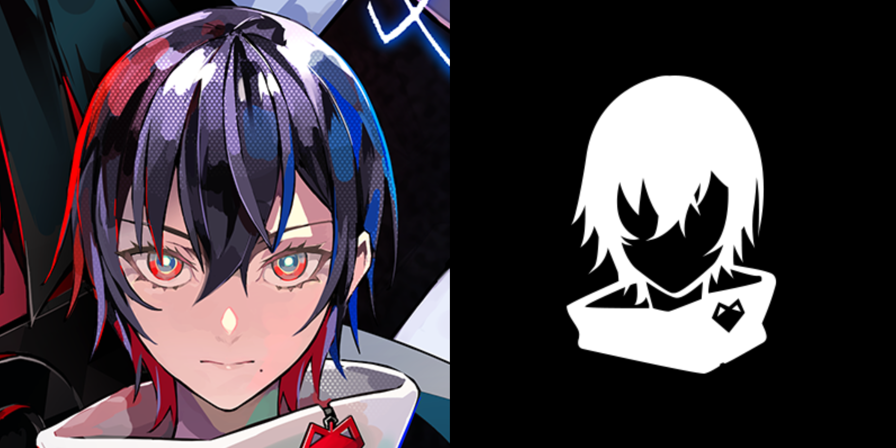

この度は「アルトデウスBC」をプレイ頂きまして、本当にありがとうございました。
こちらを見ているということは、本作品を全身で体感されたことかと思います。
いかがでしたでしょうか？
本作品のコンセプトは『この光景は、夢じゃない─』 です。
プレイ前、プレイ中、プレイ後。あらゆる場面でこのコンセプトから受け取れる意味合いは変化していきます。プレイを終えた"イマ"、あるいはプレイ途中でこちらを覗き見した"イマ"、その瞬間瞬間に感じたことを大切にしていただけると嬉しいです。
もしも、本作の「物語体験」を通じて得た、優しさだったり、信頼だったり、熱さや懸命さ。切なさや愛おしさだったり。そういったものがVRゴーグルを外したその先まで届いて、皆さまの人生が少しでも素敵になったら...。制作スタッフ一同それ以上嬉しいことはありません。
「ALTDEUS: Beyond Chronos」ならびに、クロノスシリーズはまだまだ終わりません。物語は続いていきます。
そして、むしろここをスタート地点として私たちは『VR x 物語』を軸に、VRムーブメントを広げていきたいと思っています。人生を変えるような体験を作っていきます。
クロノスシリーズを好きになってくれた方。そして私たちのチャレンジに共感し、応援してくれる方々へ。
いくつかのお願いや、お知らせがございます。見ていただけたら嬉しいです。
[1] 制作スタッフからのお願い
[2] VRゲーム「東京クロノス」のご案内 (クロノスシリーズ作品)
[3] クロノスシリーズの情報をキャッチできる場所
本作品を見つけてくださってありがとうございます。
そして、どうかこれからも皆様にとって、この作品やシリーズが特別なものになりますように。
よろしくお願いいたします！
[1] 制作スタッフからのお願い
{kind=link}
制作スタッフより皆様へお願いがあります。
率直に「ストアにて星をつけて欲しい」のです。皆様の30秒をいただけませんでしょうか？
(もし文章でコメントまでいただけましたら、さらに幸せです。ただ繰り返しますが、星をつけるだけでも全くかまいません)
沢山の作品があり、その中でもレビューを見て買う人がとても多い昨今。制作スタジオにとってプレイしてくださった方々レビューは何より重要です。
少しでも気に入って頂けましたら、フェアに星をつけてもらえるとスタッフ一同、今後新しいものを作っていく上での活力になり、本当に嬉しいです
レビューは後で書き換えられます。こちらを読んでくださっているのはクリア後の人が多いかとは思うのですが、まだクリアしていない方も、初回プレイで星をつけるだけでもして頂けると、どれだけの人たちがプレイしているかが、沢山の方々に伝わりますので、本当にありがたいです。
(ちなみに、レビューのコメントにはスタッフから順次お返事をさせて頂いております。だからなんだ、と言われるかもしれません。ただ、伝えたかったことは、コメントは一つ一つ大切に拝見させております、ということです。本当にありがとうございます)
[2] VRゲーム「東京クロノス」のご案内 (クロノスシリーズ作品)
.png)
こちらはご紹介です。今回プレー頂いた「ALTDEUS: Beyond Chronos」はクロノスシリーズ2作目のタイトル。実は1作目もございます。 2019年発売のVRミステリーアドベンチャー「東京クロノス」です！
舞台は、2018年の渋谷。人が誰もいない渋谷にいざなわれた8人の幼なじみが、この世界からの脱出を目指し、元凶の犯人を探していく。
アルトデウスBCとはまた異なる雰囲気の作品となっておりますが、クロノスシリーズの繋がりも感じられますので、ぜひ未プレイの方は遊んでみてください！Oculus, Steam, PSVRで遊べます。対応機種などは公式サイトにて！
(ちなみに東京クロノスが終わったら、スピンオフの「渋谷隔絶」という小説もあるのでぜひ...！)
[3] 今後、クロノスシリーズの情報をキャッチできる場所につきまして

アルトデウスBCはグッズ展開や、イベント開催、メディアミックス (※例えば小説化などVR以外の媒体でもでたりすること) など様々な展開を予定しております。また、クロノスシリーズの新作タイトルなどに関しても随時Twitterを中心に情報発信を続けてまいります。
本作を気に入って頂き、情報を受け取ってくださるという方はぜひ【公式Twitterアカウント】をフォローしてくださると嬉しいです。
またそういった公式情報とは別に、クローズドコミュニティがございます。クロノスシリーズの制作スタッフにフォーカスし、各クリエイターがノウハウを展開したり。一緒に商品開発などしたり。制作コソコソ裏話をしたり。
そんなことをしながら『VRムーブメント』を作るために共犯関係になるTwitterクローズドコミュニティ『AGIT (アジト)』もございますので、よろしければこちらもチェックしてみてください...！
・・・
ここまで、読んでくださりありがとうございます。
また、何度も伝えたい言葉です。アルトデウスBCをプレイしてくださり、本当にありがとうございます。
VRゲームは、現状メインストリームとはいえません。体験までの工程や動画での伝わりづらさ。認知のハードル。まだまだ沢山の課題があります。
ですが、こちらを見て下さっている皆様。言い換えるとアルトデウスBCをプレイしてくれた皆様は、少しだけ違う光景が見えているのではないでしょうか。
多くの欠点全て飲み込んで余りあるほどに、『VR×物語』は時にとんでもない感動や衝撃をもたらし、人生を変えてしまうような感性や経験を与えてくれる。そんな一端を感じ取って下さったら本当に嬉しいです。
私たち制作チームは、テクノロジーと物語を掛け合わせて人生を変えるような体験を作りたいと思っています。
その中で、VRで紡ぐ物語の可能性を愚直にこれまで信じ続けてきました。これからももっともっと進化し作り続けたい。両手いっぱいにある、まだまだやりたいことをやっていきたい。そして少しでも多くの人に、衝撃的な体験を、感動を味わってもらうべく、考えつく限りのこと全てをやってまいります。
本当に長くなってしまいましたが、最後に飾り気なく心から。
本作を見つけて下さってありがとうございました。
皆様、これからもクロノスシリーズならびにMyDearestをよろしくお願いいたします。
MyDearest 制作スタッフ一同より プレイしてくれた "あなた" へ